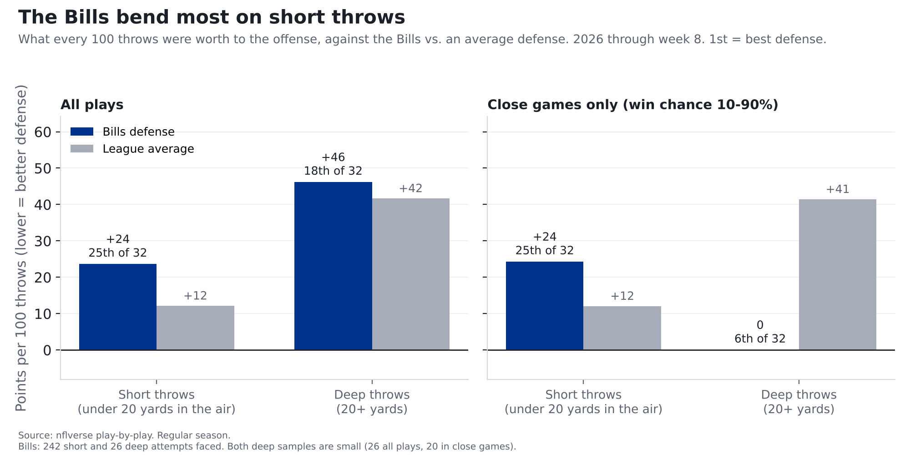
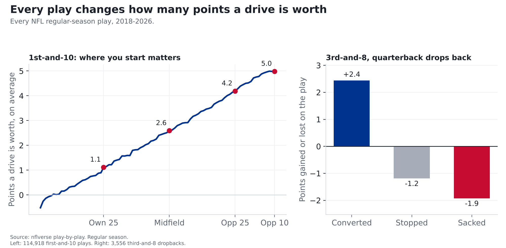
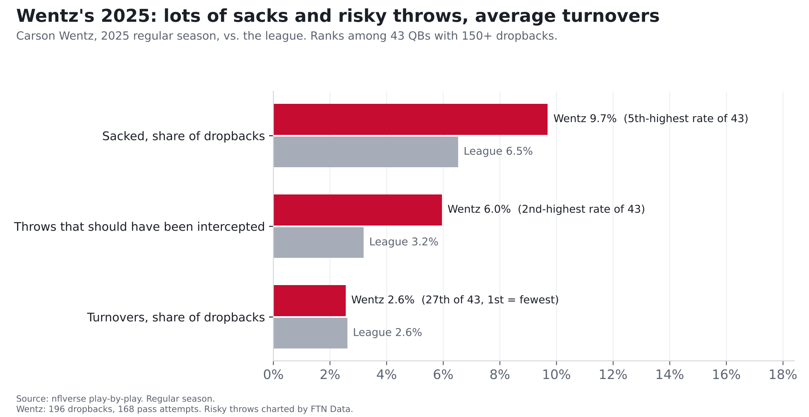

Carson Wentz vs. the Bills defense: short passes, sacks and risky throws
Carson Wentz starts for Minnesota. Here's where his tendencies meet the Bills defense's weak spots, and what we expect Monday.
Finding: Compared with the rest of the league, the Bills' defense is weakest on short passes, the ones thrown less than 20 yards downfield. They rank 25th of 32 there, and 25th with garbage time removed. Even accounting for the offenses they've faced, short passes have been worth about 21 more points to opponents than you'd expect against an average defense, roughly 3 a game. That's where most of Minnesota's passing will go: like most quarterbacks, Carson Wentz threw short on 88% of his attempts last season. But Wentz brings two weak spots of his own. He was sacked on 9.7% of his dropbacks, the 5th-highest rate among 43 quarterbacks, and his share of throws that should have been intercepted was the 2nd-highest.
Bills at Vikings, Monday Night Football, Nov. 9, 8:15 p.m. ET, U.S. Bank Stadium (indoors). Kyler Murray is out with a strained hamstring, so Wentz starts. Numbers are 2026 through week 8 unless noted, and Wentz's are mostly from 2025, since he has dropped back only 47 times this year.

How we measure it: what a play is worth
Nobody scores on every play, so how can a short pass be "worth" points? Because every play moves a drive closer to points or further away. Since 2018, 1st-and-10 at your own 25 has been worth about 1.1 points: that's the average of the next score in the half, with the other team's scores counted as minus points (so a punt that hands them good field position counts against you). 1st-and-10 at the opponent's 25 has been worth about 4.2. So a pass that moves the ball from one spot to the other is worth about 3 points, even though nobody has scored yet. On 3rd-and-8, a conversion is worth about +2.4 points, and a sack costs about 1.9.

The source: the NFL's official play-by-play, published free by the nflverse project, covering every snap. For blitzes and risky throws we add charting from FTN Data, whose analysts watch every play and mark things the official feed doesn't, like how many defenders rushed and whether a throw should have been picked off.
The math: take what the drive was worth after the play, subtract what it was worth before, and that's the play's value. Add up 100 plays and you get points per 100 plays, a fair way to compare teams that run different numbers of plays. A good defense keeps that number low. It adds up fast: the Bills give up about 11 more points per 100 short passes than average and face about 35 a game, which works out to about 4 points a game. Part of that is the schedule: the offenses Buffalo has played have also been good on short passes in their other games. Measured against what those same offenses did elsewhere, the gap is about 21 points, or 3 a game. That's the number we lead with.
How we checked it: we ran the efficiency numbers two ways, on all plays and on close-game plays only (when either team had between a 10% and 90% chance to win), so a few blowout drives can't drive the story. Where the two disagree, we say so.
Where the Bills bend: short throws
Every 100 short passes against an average defense are worth about +12 points to the offense. Against the Bills, +24, 25th of 32. Over the 242 short passes they've faced in 7 games, that's about 28 points of value more than an average defense would have given up (21 after adjusting for the offenses they've faced). The second check agrees: in close games it's +24 per 100 (25th), and they give up 6.8 yards per short attempt (25th; league 6.5).
Deep throws are a different story. Opponents have tried them on only 9.7% of attempts against Buffalo (9th-fewest), and in close games those deep throws have been worth 0 points per 100 against the Bills, 6th in the league (league average +41; only 20 attempts, a small sample). Counting blowouts they're 18th, but that's only 26 deep attempts.
Overall the Bills rank 24th against the pass (+14 points per 100 dropbacks; league +5), give up 20-yard plays on 9.6% of dropbacks (25th; league 8.1%), and allow third-down conversions 42% of the time (22nd; league 40%).
What Wentz brings
| Wentz 2025 | Wentz 2026 | Murray 2026 | League 2026 | |
|---|---|---|---|---|
| Dropbacks | 196 | 47 (small sample) | 184 | |
| Points per 100 dropbacks, all plays | +4 | +8 | -5 (23rd of 30) | +5 |
| Points per 100 dropbacks, close games | -4 | 0 | -6 (23rd) | +6 |
| Sacked | 9.7% | 12.8% | 8.2% | 6.2% |
| Share of throws 20+ yards downfield | 11.9% | 7.7% | 12.4% | 11.4% |
| Throws that should have been intercepted | 6.0% | 2.6% | 2.6% | 3.0% |
League averages for 2025: +4 points per 100 dropbacks, +5 in close games, sacked 6.5%, deep share 11.5%, should-have-been-intercepted 3.2%.
Two things stand out.
Wentz looks better overall than in close games. Counting every play, he was about league average last season (+4 points per 100 dropbacks; league +4). With garbage time removed he drops to -4, 32nd of 43, meaning that when games were close his dropbacks moved his team further from points, not closer. Some of his best numbers came when games were already decided (53 dropbacks outside close games, a small sample). Murray this year was 23rd of 30 overall and 23rd in close games. By these numbers, neither has been an above-average passer when the game is still in doubt.
Risk. Wentz was sacked on 9.7% of dropbacks (5th-highest rate of 43) and threw 10 passes that FTN's charters marked as should-have-been-intercepted, 6.0% of his attempts (2nd-highest rate; league 3.2%). He got away with most of them: his actual turnover rate was 2.6%, about league average (2.6%).

Where it meets
- Short passes are the matchup. Most of Wentz's throws are short (88%, about the league norm) and the Bills are at their weakest there. His own short-throw numbers were good overall (9th of 43) but 27th in close games. That's where we'd expect the Vikings to attack.
- The Bills blitz a lot without getting home. Buffalo sends extra rushers on 39% of dropbacks (7th-most), but gets sacks on only 7.1% of those plays (league 8.3%) and 3.9% without a blitz (league 5.2%). Wentz's sack habit is the best chance for that to change. Against the blitz last season, his dropbacks ranked 29th of 43 for value, on only 57 plays.
- The ground game shouldn't scare anyone. The average run costs a team a little, because short gains on early downs don't move a drive much closer to points. Minnesota's designed runs rank 28th: every 100 have cost the Vikings about 21 points (league average: about 8). The Bills' run defense ranks 17th, right around average (runs against Buffalo have lost the offense about 8 points per 100, the league norm).
- Turnovers. Buffalo forces turnovers on 2.7% of dropbacks (18th; league 2.8%). That's about average. If Wentz keeps putting the ball in harm's way, Monday is a chance for that number to go up.
What we're watching
Our model's numbers for this game. A call only counts once it's logged on the Ledger before kickoff, and every logged call is graded after the game.
| # | What we expect | Chance |
|---|---|---|
| 1 | On balance, Minnesota's pass plays move the Vikings closer to points, not further away (above zero per 100 dropbacks; the per-team league average is +6) | 65% |
| 2 | On balance, Minnesota's designed runs move the Vikings further from points (below zero per 100 runs; the league average is -8) | 81% |
| 3 | The Bills sack the quarterback on more than 6% of his dropbacks | 66% |
How we get these: start from each side's season average, pull it halfway back toward the league average (seven games is a small sample), combine offense and defense, and look at how much a single game usually bounces around. For calls 1 and 3 we used Wentz's own passing and sack numbers in place of the Vikings' team numbers, which were mostly Murray's games.
For the stat-heads
- Points per 100 plays = mean EPA (nflverse expected points added) x 100. Opponent-adjusted short-pass gap: Buffalo's short-pass EPA
allowed minus, game by game, the opponent's short-pass EPA per attempt in its other 2026 games times its short attempts vs. Buffalo
(raw gap vs. league average: 27.8; adjusted: 20.5). Dropbacks:
qb_dropback == 1, EPA not null, no two-point tries, QB by gsis id viaCOALESCE(passer_player_id, rusher_player_id)(scrambles included). Short/deep: pass attempts excluding sacks,air_yards< 20 vs >= 20. Close games:wpbetween 0.10 and 0.90. Regular season; 2026 through week 8. - QB ranks among quarterbacks with 150+ dropbacks (43 in 2025, 30 in 2026). League values in the QB table are play-weighted over all dropbacks; the Ledger calls use the average of team-game values, which is why call 1 shows a slightly different league average than the QB table. Wentz 2025 close-game sample: 143 dropbacks; 2026: 45. Wentz 2025 short throws, close games: 27th of 43.
- FTN charting (
raw_ftn, joined on game and play id): blitz =n_blitzers> 0; should-have-been-intercepted =is_interception_worthyon pass attempts. Wentz 2025: 10 of 168 attempts; 57 dropbacks vs. the blitz. - Bills defense: 293 dropbacks faced, 242 short and 26 deep attempts, 113 blitzes. Team ranks are among 32
defenses (1st = best, except blitz rate where 1st = most). Team tables from
src/metrics/team.py(max_week=8). - Calls: Ledger model v0.1-locshift, shrink 0.5, pinned to week 8. Wentz substitution 243 dropbacks (2025-26): EPA/dropback -0.0073, sack rate +0.0378 vs. league. Expected: call 1 +0.072, call 2 -0.154, call 3 0.078.
- Injury news: Kevin O'Connell announced Nov. 5, 2026 that Wentz starts with Murray out (strained hamstring). Source: ESPN.